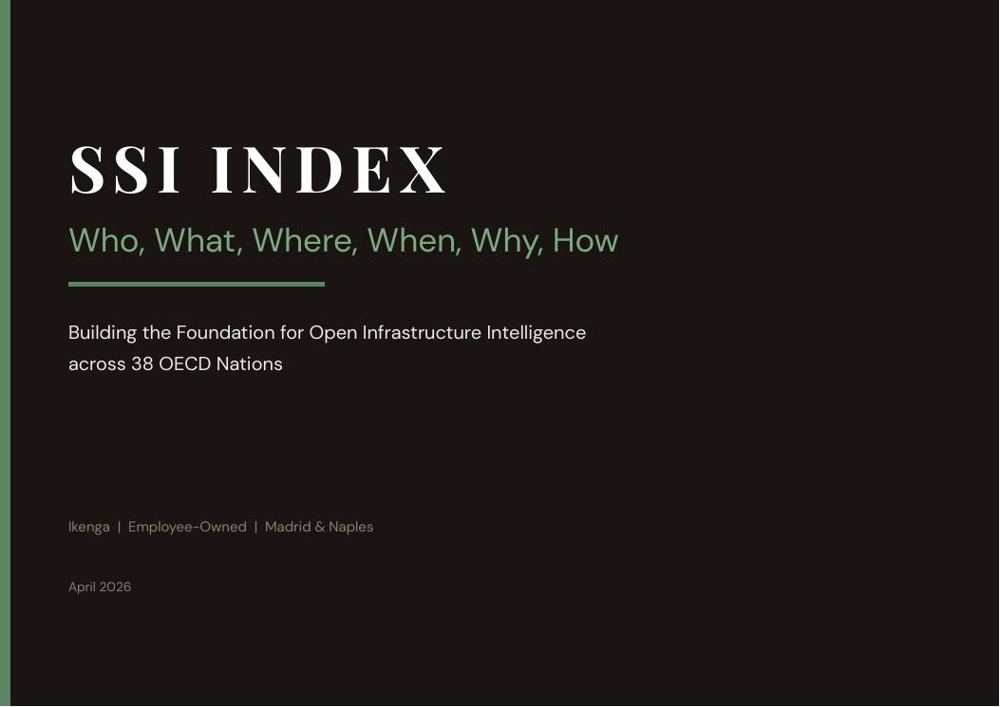

Un’offerta su misura per pv magazine Italia.
Un report gratuito, mensile o trimestrale, co-brandizzato Ikenga + SSI.Index, realizzato sui dati di 4.293 cabine primarie italiane — pensato per i lettori di pv magazine Italia.
L’SSI Index è la prima misura aperta e auditabile della vulnerabilità delle cabine primarie italiane. Fonde clima, sismicità, infrastruttura, economia, demografia, transizione energetica e — dalla v4.6 — una nuova dimensione umana (H), che traduce il punteggio di rischio in impatto reale sulle comunità: pazienti in dialisi, povertà energetica grave, servizi pubblici ormai solo digitali.
Il risultato: ogni cabina primaria acquista un nome, un comune, un bacino di utenti. La sua fragilità diventa una notizia verificabile, non un’astrazione.
Il sample report

Il teaser di una pagina

Per chi vuole la panoramica completa

20 minuti, quando vi è comodo
Una call breve per valutare la cadenza — mensile o trimestrale — e come integrare i dati SSI nella vostra linea editoriale. Nessun impegno; se non è il momento giusto, ce lo dite.
Prenota un incontro →